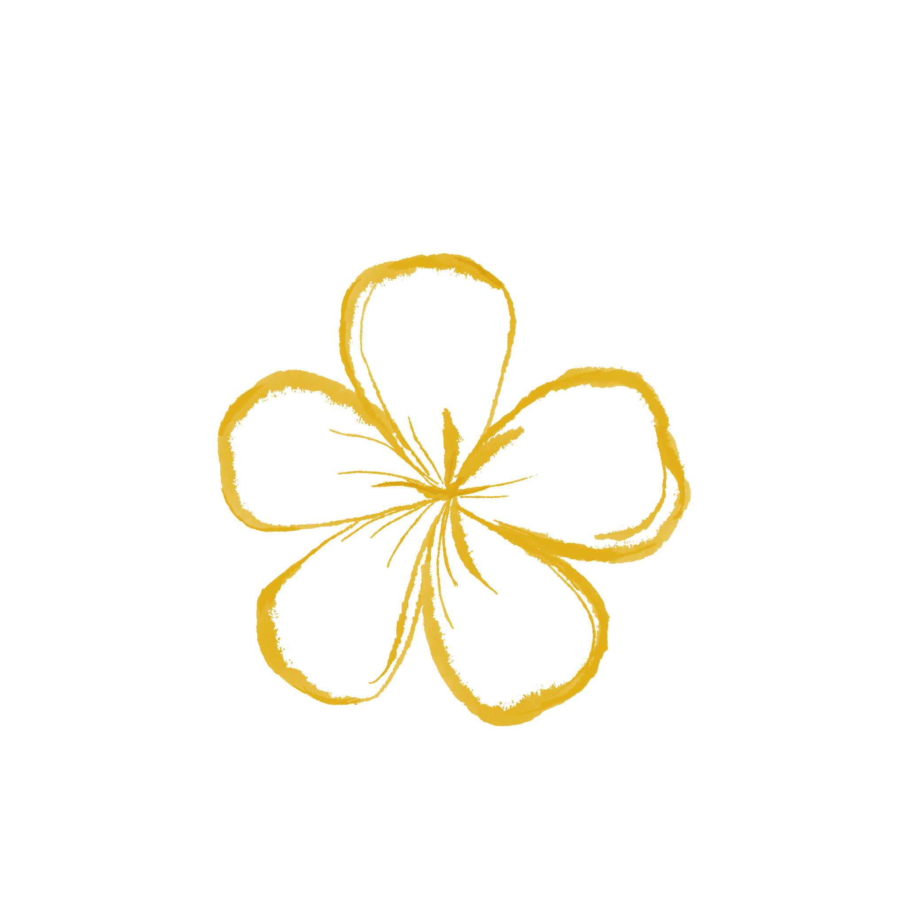
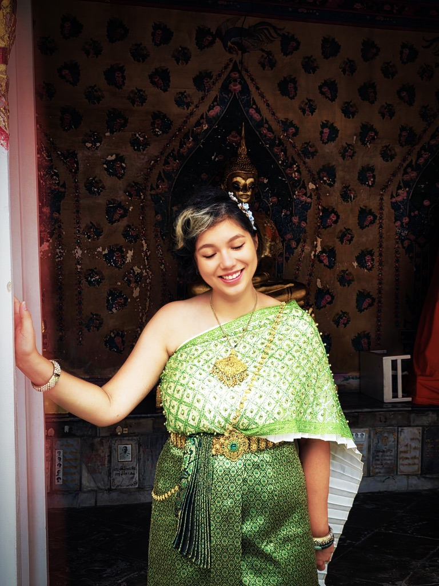

Sam
Private Chef
Placeholder for Sam — the cook behind Sanuk’s kitchen. A short note on his food, craft, and the dishes that will shape the evening.
สนุก

Zusammen genießen.
Philosophie
Sanuk (สนุก) bedeutet, Freude an dem zu haben, was man gerade tut. Eine gute Zeit haben. Genießen. Genau dieses Gefühl möchten wir mit Sanuk schaffen.
Unsere Küche hat ihre Wurzeln in Thailand. Authentische Gerichte, traditionelle Aromen und gute Zutaten sind unser Ausgangspunkt. Gleichzeitig bringen wir unsere unterschiedlichen kulturellen Hintergründe und Lebenserfahrungen mit an den Tisch. Thailändische, chinesische und deutsche Einflüsse treffen auf Neugier, Kreativität und die Freude daran, Bekanntes neu zu denken.
Doch Sanuk hört für uns nicht beim Essen auf.
Wir kochen live bei euch, erzählen von den Zutaten, den Gerichten und den Geschichten dahinter. Wir servieren, kümmern uns um den Abend und sind für euch da. Persönlich und in privater Atmosphäre. Denn wenn man Freunde oder Familie einlädt, sollte man den Abend auch selbst genießen können.
Ihr müsst nicht kochen.
Ihr müsst nicht servieren.
Ihr müsst euch um nichts kümmern.
Statt Gastgeber zu sein, dürft ihr selbst Gast werden. Wir kümmern uns um den Rest, damit Zeit für das bleibt, worum es eigentlich geht: gemeinsam essen, entdecken, lachen und eine gute Zeit haben.
Das ist Sanuk.
Experience
Placeholder for the Sanuk experience — atmosphere, ritual, and the details that make a night feel unhurried and complete.
Team
Private Chef
Placeholder for Sam — the cook behind Sanuk’s kitchen. A short note on his food, craft, and the dishes that will shape the evening.

Event organizer
Placeholder for Yasmin — the event organizer. A few lines on how she hosts the night, gathers the table, and looks after every detail of the experience.

Event organizer
Placeholder for Tianying — also an event organizer. A short note on how she helps shape the evening, welcome guests, and keep the experience feeling personal.
Reservierung
Schreib uns oder ruf an — wir finden gemeinsam den richtigen Abend.